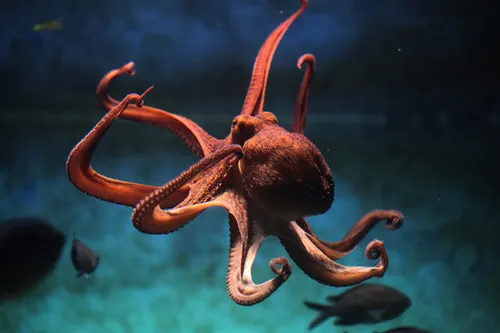
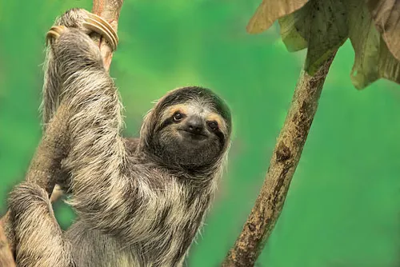
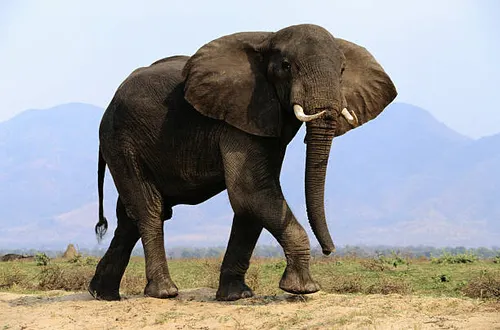
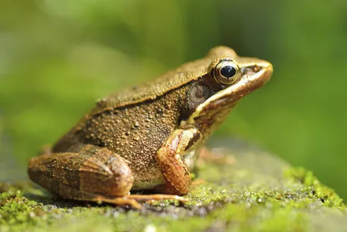
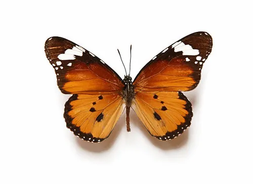
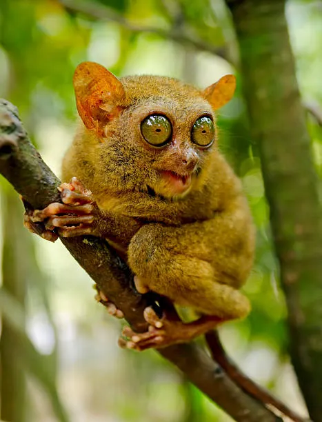

Octopus

An octopus has three hearts and blue blood. Two hearts pump blood to the gills, while the third pumps it to the rest of the body.
Sloth

Sloths can hold their breath longer than dolphins. They can slow their heart rate and hold their breath for up to 40 minutes underwater.
Elephant

Elephants can "hear" with their feet. They pick up subsonic rumblings made by other elephants through vibrations in the ground.
Frog

Wood frogs in Alaska can survive being frozen. They stop breathing and their heart stops during winter, but thaw and hop away in spring.
Butterfly

Butterflies taste with their feet. Their receptors help them identify the right plants to lay eggs on and feed from.
Tarsier

Tarsiers have eyes larger than their brains. This helps them see well at night, as they're nocturnal hunters in the wild.